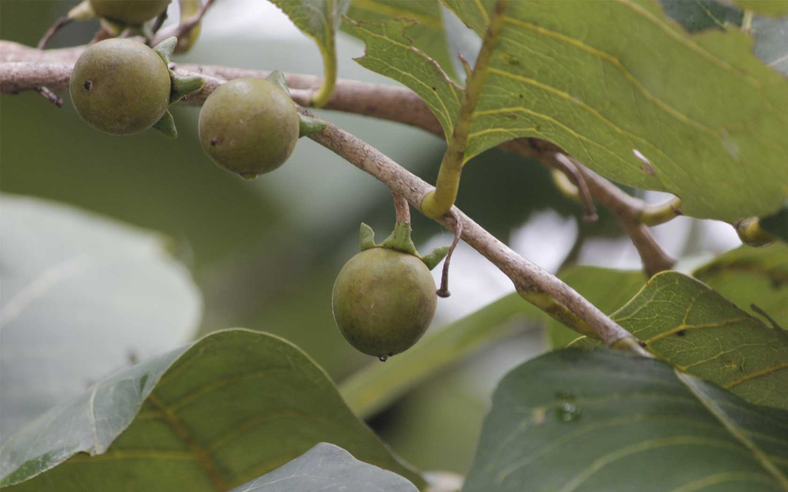

1. ถั่วดินโคก /
ลักษณะทางพฤกษศาสตร์
พิษนาศน์จัดเป็นไม้พุ่มขนาดเล็ก สูงได้ 15-30 เซนติเมตร ลำต้นลักษณะสั้นประมาณ 5-8 เซนติเมตร ใบเป็นใบประกอบแบบขนนก ออกเรียงสลับ แนบกับพื้นดินมีใบย่อย 9-13 ใบ โดยจะเป็นรูปวงรี รูปไข่ หรือ รูปขอบขนานแกมวงรี

2. เทพทาโร /
ลักษณะทางพฤกษศาสตร์
ไม้พุ่มขนาดเล็ก สูง 15-30 เซนติเมตร ลำต้นสั้นมาก ใบประกอบแบบขนนกเรียงสลับแนบกับพื้นดินเป็นแนวรัศมี ใบย่อย 9-13 ใบ รูปวงรีรูปไข่หรือรูปขอบขนานแกมวงรี ใบย่อยปลายใบรูปไข่กลับ กว้าง 1.5-3 เซนติเมตร ยาว 2-5 เซนติเมตรผิวใบมีขนละเอียดสีขาว ดอกช่อกระจะ ออกที่ปลายยอด ดอกย่อยจำนวนมาก

3. มะตูมนิ่ม /
ลักษณะทางพฤกษศาสตร์
เป็นไม้ยืนต้นสูง 10-15 เมตร ใบเดี่ยว ออกเรียงสลับ รูปรี หรือรูปใบหอกปลายแหลม โคนมน ขอบหยัก ใบมีกลิ่นหอม ยอดอ่อนกินเป็นผักสดกับน้ำพริกได้ ในทางไสยศาสตร์ถือว่า ใบของมะตูมทุกชนิด ใช้ป้องกันเสนียดจัญไร ขับภูตผีปีศาจได้ ดอกเป็นสีขาวมีกลิ่นหอมแรงและหอมไกล

4. มะหาด /
ลักษณะทางพฤกษศาสตร์
จัดเป็นไม้ยืนต้นขนาดใหญ่ สูง 15-25 เมตร เปลือกต้นสีน้ำตาลอมแดงถึงน้ำตาลเข้ม ต้นแก่ผิวจะหยาบและแตกเป็นสะเก็ดเล็กๆ ยอดอ่อนมีขนสีน้ำตาลออกแดงหนาแน่น มีน้ำยางสีขาว ใบ เป็นเดี่ยวเรียงแบบสลับระนาบเดียว รูปไข่หรือรูปขอบขนานขนาด 25-30 x 15-20 ซม. ปลายใบมน ฐานใบมนหรือแหลมกว้าง อาจเบี้ยวไม่สมมาตร ขอบใบเรียบหรือมีซี่จักเล็กน้อย

5. เร่ว /
ลักษณะทางพฤกษศาสตร์
โดยทั่วไปแล้วลักษณะทั่วไปของเร่วน้อยและเร่วใหญ่จะคล้ายๆกัน โดยจะมีส่วนของผลเท่านั้นที่แตกต่างกัน ซึ่งลักษณะทั่วไปของเร่วมีดังนี้เร่วจัดเป็นพืชล้มลุก มีเหง้าหรือลำต้นอยู่ในดิน มีลำต้นเทียมเป็นกาบแข่งโผล่เหนือดินขึ้นมา สูงได้ 2-4 เมตร โดยเป็นพืชสกุลเดียวกับ กระวาน ข่า ขิง ดอกมีสีขาว

6. หัวร้อยรู /
ลักษณะทางพฤกษศาสตร์
หัวร้อยรูจัดเป็นพืชจำพวกฝาชนิดมีหัว ซึ่งเป็นไม้ที่อิงอาศัยเกาะตามต้นไม้อื่น ลำต้นสูง 25-60 เซนติเมตร มีลำต้นเป็นแบบอวบน้ำ โดยส่วนโคนต้นจะขยายใหญ่เป็นรูปกลมป้อม หรือ โป่งพอง ต้นแก่บางต้นอาจจะมีหัวกลมโตขนาดเท่าลูกมะพร้าว ภายในหัวเป็นรู พรุนไปทั่วหัว สีของเนื้อเป็นสีน้ำตาลเข้มเนื้อนิ่ม

7. กระทุ่มนา /
ลักษณะทางพฤกษศาสตร์
กระทุ่มนาจัดเป็นไม้ยืนต้นผลัดใบขนาดกลาง มีความสูง 8-15 เมตร เรือนยอดทรงพุ่มเป็นทรงพุ่มกลม แตกกิ่งแขนงต่ำ ลำต้นเปลาตรง หรือ อาจคดเล็กน้อย เปลือกลำต้นด้านนอกเป็นสีเทาอ่อน และมักจะหลุดออกเป็นแผ่นเล็กๆ ทำให้ดูเปลือกขรุขระ และยังมีรูระบายอากาศขนาดใหญ่ทั่วไป

8. ขันทองพยาบาท /
ลักษณะทางพฤกษศาสตร์
ขันทองพยาบาทจัดเป็น ไม้ยืนต้นขนาดกลาง สูง 7-15 เมตร เป็นพันธุ์ไม้ที่มีทรงพุ่มแน่นทึบ ลำต้นตั้งตรง เปลือกต้นมีสีน้ำตาลแก่ ผิวบางเรียบ ส่วนกิ่งก้านกลมสีเทา กิ่งมักจะห้อยลง และบริเวณกิ่งมีขนรูปดาวขึ้นปกคลุม และมีเนื้อไม้สีขาว
9. จุกโรหินี /
ลักษณะทางพฤกษศาสตร์
โกฐพุงปลามีลักษณะคล้ายกระเพาะปลาขนาดเล็ก ลักษณะคล้ายถุงแบน กลวง ปากแคบคือมีคอคอดคล้ายมีขั้ว ก้นป่อง แบน ผิวสีน้ำตาลปนนวล บางตอนเรียบ บางตอนเป็นตะปุ่มตะป่ำ
10. ชะเอมไทย /
ลักษณะทางพฤกษศาสตร์
ไม้เถายืนต้นขนาดกลาง สูง 5-8 เมตร มีหนามตามลำต้นและกิ่งก้าน เปลือกนอกสีน้ำตาลอมเทา ใบเล็กละเอียดเป็นฝอย เป็นใบประกอบแบบขนนก 2 ชั้น ยาว 10-15 เซนติเมตร เรียงสลับ ใบย่อยเรียงตรงข้าม ใบย่อยรูปขอบขนาน มีขนที่ขอบใบ ผิวค่อนข้างเกลี้ยง

11. ชิงชี่ /
ลักษณะทางพฤกษศาสตร์
ไม้พุ่มกึ่งเลื้อยสูง 2-6 เมตร ลำต้นสีเทาแตกระแหง กิ่งก้านอ่อนมีสีเขียว ผิวเรียบเกลี้ยง กิ่งคดไปมา มีหนามตรงหรือโค้งเล็กน้อย

12. ตับเต่า /
ลักษณะทางพฤกษศาสตร์
ตับเต่าต้นจัดเป็นไม้ยืนต้นผลัดใบขนาดเล็กถึงขนาดกลาง ทรงพุ่มเป็นรูปกรวยโปร่ง ต้นสูงประมาณประมาณ 10-15 เมตร เปลือกต้นสีน้ำตาลปนเทาหรือสีเทาอมขาว ส่วนเปลือกด้านในเป็นสีน้ำตาลอมแดง

13. นางแย้มป่า /
ลักษณะทางพฤกษศาสตร์
นางแย้งป่าจัดเป็นไม้พุ่มขนาดย่อม มีความสูงของต้นประมาณ 0.5-4 เมตร ลำต้นตั้งเป็นสันสี่เหลี่ยมตรงแต่ไม่มีขนปกคลุม เหมือนนางแย้ง (C.chinense (Osbeck) Mabb.) กิ่งอ่อน และต้นเปราะ ตามลำต้น และกิ่งอ่อนเป็นสีแดง หรือ สีดำอมน้ำตาล

14. ปลาไหลเผือก /
ลักษณะทางพฤกษศาสตร์
รากเป็นสีขาว มีลักษณะยาวคล้ายปลาไหลเผือก จึงเรียกกันว่าปลาไหลเผือก อีกทั้งยังมีเพียงรากเดียว จึงทำให้บางท้องถิ่นจึงเรียกอีกชื่อว่า “พญารากเดียว” โดยปลาไหลเผือกจัดเป็น ไม้พุ่ม หรือไม้ต้นขนาดเล็ก ลำต้นตั้งตรง สูง 1-10 เมตร เปลือกสีน้ำตาล เป็นไม้ลงราก รากกลมโตสีขาวยาว กิ่งอ่อนมีขนสีน้ำตาล

15. พังคี /
ลักษณะทางพฤกษศาสตร์
ไม้พุ่มขนาดเล็ก สูงประมาณ 20-40 เซนติเมตร มีรากขนาดใหญ่ใต้ดิน เปลือกรากหลุดออกง่าย มีกลิ่นหอม
16. มะคังแดง /
ลักษณะทางพฤกษศาสตร์
ไม้ยืนต้น กึ่งไม้พุ่ม ขนาดกลาง สูง 6-12 เมตร ใบดกหนาทึบ ลำต้นและกิ่งก้านสีน้ำตาลแดง มีขนนุ่มๆเหมือนกำมะหยี่สีน้ำตาลแดงปกคลุมทั่วไป โคนต้นและกิ่งมีหนามโดยรอบ หนามขนาดใหญ่ พุ่งตรงออกเป็นระยะ
17. สะค้าน /
ลักษณะทางพฤกษศาสตร์
ไม้เถาเลื้อย ลำต้นอวบอ้วนขนาดใหญ่ ทุกส่วนเกลี้ยง รูปทรงและขนาดของใบพบได้หลากหลาย เนื้อใบเหนียวและหนามากใบบนลำต้นมีขนาดเล็กกว่ามาก ส่วนใหญ่แผ่นใบรูปสามเหลี่ยมแคบโดยเรียวไปทางปลายใบ
18. สารภีป่า /
ลักษณะทางพฤกษศาสตร์
ไม้ยืนต้นขนาดเล็กถึงขนาดกลาง ไม่ผลัดใบ สูงถึง 25 เมตร ลำต้นคดงอ แตกกิ่งต่ำ เปลือกต้นเรียบหรือแตกเป็นร่องตื้นไม่เป็นระเบียบ อาจมีรอยแตกลึกเป็นลวดลายละเอียด บางครั้งเปลือกสีครีมค่อนข้างเรียบ เปลือกในสีแดงปนน้ำตาล
19. อบเชยไทย /
ลักษณะทางพฤกษศาสตร์
อบเชยเป็นเครื่องยา และเครื่องเทศ ที่ได้จากการขูดเอาเปลือกชั้นนอกออกให้หมด แล้วลอกเปลือกชั้นในออกจากแก่นลำต้น

20. เฉียงพร้านางแอ /
ลักษณะทางพฤกษศาสตร์
เฉียงพร้านางแอ จัดเป็นไม้ยืนต้นขนาดกลางถึงขนาดใหญ่ ไม่ผลัดใบ สูง 25-30 เมตร เรือนยอดทึบทรงพุ่มมีขนาด 6-8 เมตร รูปกรวยกว้าง ลำต้นตั้งตรง ผิวเรียบ เปลือกสีน้ำตาลอมแดงถึงน้ำตาลอมเทา
21. เถาเอ็นอ่อน /
ลักษณะทางพฤกษศาสตร์
ต้นเถาเอ็นอ่อน จัดเป็นไม้เถาเลื้อยพาดพันกับต้นไม้อื่น เป็นไม้เลื้อยจำพวกเถาเนื้อแข็ง เถาลำต้นกลม เปลือกเถาเรียบหนาเป็นสีน้ำตาลอมสีดำหรือเป็นสีแดงเข้มและมีลายประตลอดเถา ยาวประมาณ 4-5 เมตร ก้านเล็ก มีสีเทาอมเขียวและไม่มีขนปกคลุม เมื่อเถาแก่เปลือกจะหลุดลอกออกเป็นแผ่น ๆ มียางสีขาวข้นทั้งต้น
22. เปราะหอม /
ลักษณะทางพฤกษศาสตร์
เปราะหอมจัดเป็นไม้ลงหัวหรือพืชล้มลุก มีลำต้นใต้ดินประเภทไรโซม (Rhizome) ลักษณะเป็นเหง้าแง่งกลมรูปไข่สีเหลืองอ่อนมีเยื่อบาง ๆ รูปสามเหลี่ยมหุ้มโคน เหง้าแก่สีน้ำตาล เนื้อในหัวสีขาวหรือขาวเหลือง มีสีเหลืองเข้มตามขอบนอกและมีกลิ่นหอมเฉพาะตัว สามารถดำรงชีวิตอยู่ได้ข้ามปีหรือหลายปี